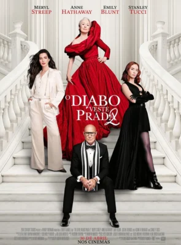
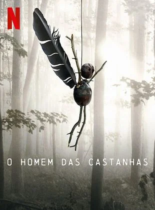

Filmes e Séries


Explore as maiores produções do cinema mundial, análises de lançamentos e maratonas das suas séries favoritas diretamente no seu sofá.
Música e Podcasts
A trilha sonora perfeita para o seu dia a dia. Descubra novas playlists, gêneros musicais marcantes e os
podcasts mais informativos do momento.
Fique por dentro das musicas mais tocadas e os podcast mais ouvidos.
Games e Tecnologia


Fique por dentro das novidades do mundo dos jogos eletrônicos, hardwares de última geração, reviews e a
evolução da realidade virtual.
Minecraft, um dos games mais jogados e mais conhecidos do mundo,e é um sandbox de sobrevivência.
A Meta anunciou a implementação de novas ferramentas de IA (inteligência artificial) para reforçar a verificação de
idade em suas plataformas, Instagram e Facebook.